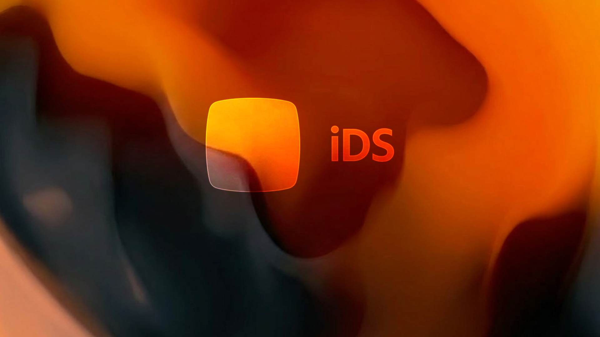

Open to new opportunities
Turning complexity into clarity, one product at a time
I'm Caique, a data-driven Product Designer with expertise in accessibility and scalable design systems, ready to bring my enterprise experience to your next challenge.
Current companyNTT Data × Itaú
Experience12+ anos
FocusUX · a11y · DS

Work
Recent work
(3 projects)Designing íon web: accessibility, scale, data-driven decisions, and 9.2% conversion
In 2022, I helped Itaú expand their investment platform to the web. Through iterative design, accessibility work, and data-driven decisions, we reached 30,000 monthly users and hit 9.2% conversion, more than double the goal.

View
Fixing Itaú's Design System: how I analysed and standardized 60+ components from design to code
In 2024, I helped NTT Data and Itaú standardize a design system used by thousands. We analyzed and fixed 60+ components across Angular, React, Flutter, and Swift, improving consistency, accessibility, and delivery speed.

View
No budget, plenty of bureaucracy: how I built a testing process from scratch
In 2025, I needed to run usability tests for Itaú's new free energy market product with zero guaranteed budget and no direct access to clients. I found another way.
View case
02About
I've spent the last years designing large-scale experiences for Itaú Unibanco, the largest bank in Latin America, across a diverse range of segments: automotive, investments, design systems, artificial intelligence, free energy market, and insurance. My work has impacted millions of users, focusing on UX, digital accessibility, and design systems that are consistent, inclusive, and high-performance. Evolving with every project, my process combines product design, user research, and human centered design to deliver clarity and business impact.
I design for people.
01
UX Research & Strategy
Interviews, usability tests, data analysis and insight synthesis to ground design decisions in real evidence.
02
Product & UI Design
Designing digital interfaces that combine product strategy, creativity and usability · from wireframes to high-fidelity prototypes.
03
Design Systems
Building and evolving scalable design systems · tokens, components, documentation and governance for teams of any size.
04
Digital Accessibility
Robust accessibility specs and audits following WCAG 2.1 criteria · ensuring inclusion without compromising visual quality.
Tools & Skills
FigmaUX ResearchDesign Systems
Accessibility WCAGPrototypingUsability Testing
Data-Informed DesignMobile Design
Workshop FacilitationJobs To Be DoneFigJam